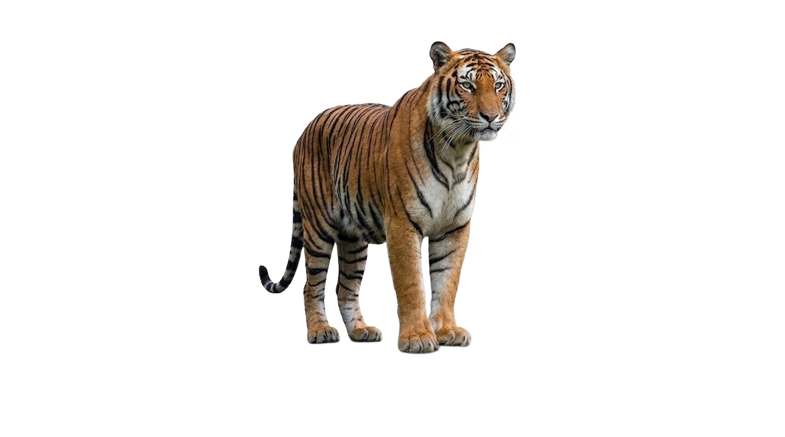
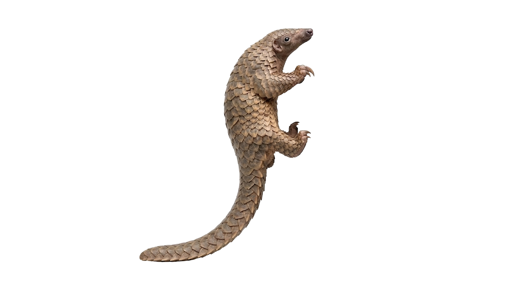
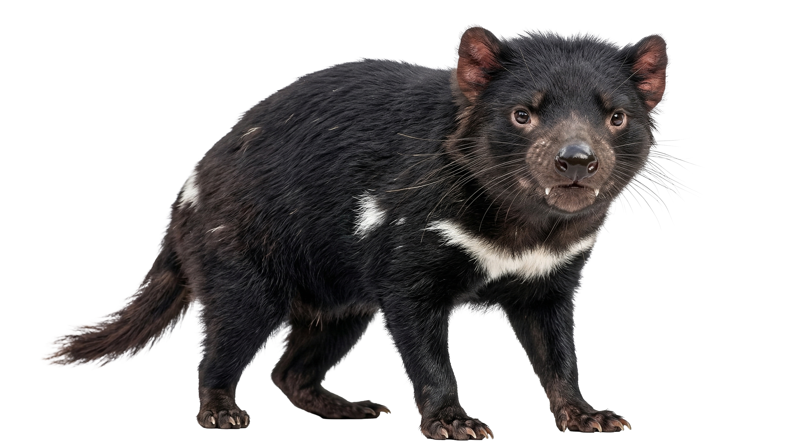

Tiger
No two tigers wear the same stripe pattern. Each coat is a signature written by the wild.
Pangolin
Pangolins are the world’s only mammals covered in protective keratin scales.
Tasmanian Devil
Small but mighty, Tasmanian devils have one of the strongest bites for their size.
Leopard
Leopards move like shadows and can haul prey heavier than themselves into the trees.
Move your light through the jungle and uncover the animals hidden in the dark.
Return to Trail